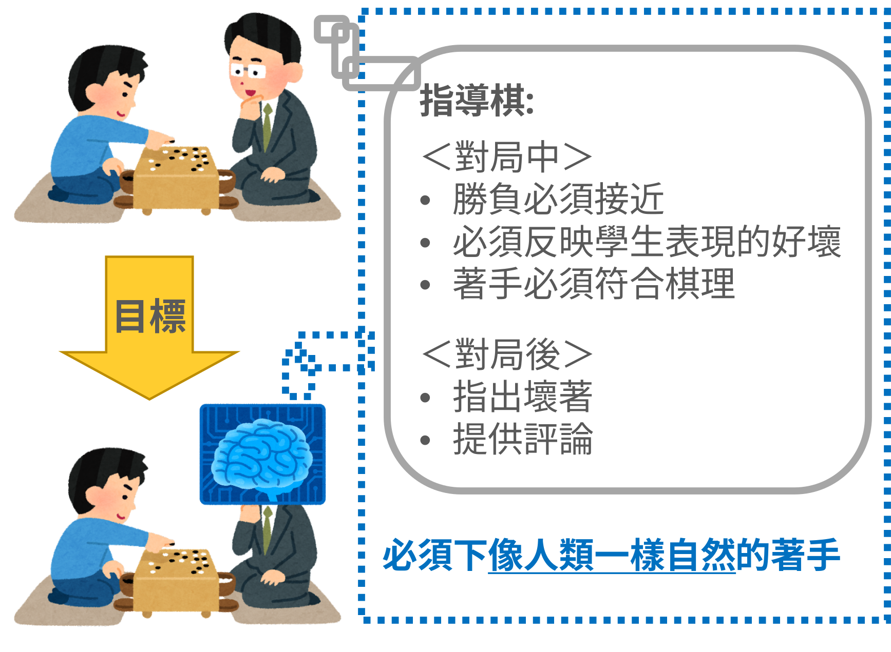
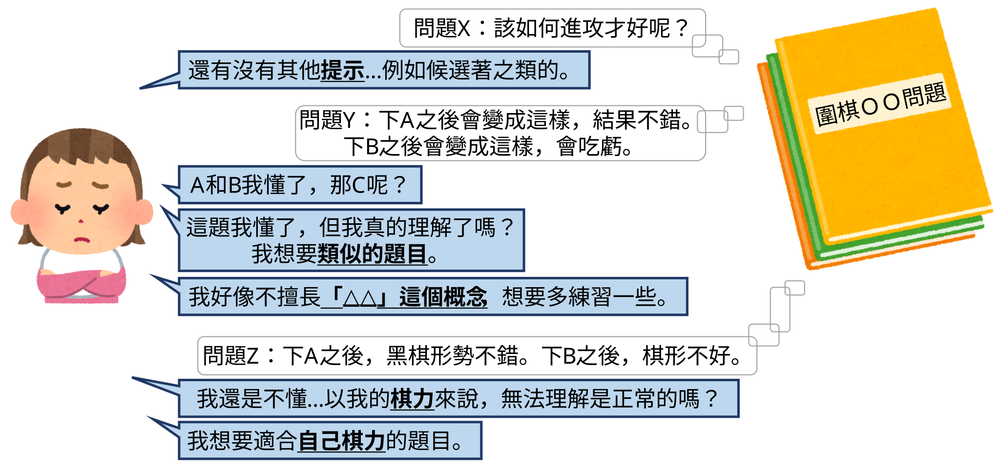

遊戲自古以來便是人類娛樂的一部分，也是AI研究的重要領域之一。 如今在許多遊戲中，AI玩家的實力已經超越頂尖的人類玩家。 一方面，研究者持續開發強大且具有通用性的AI方法；另一方面，隨著社會朝Society 5.0邁進，讓AI成為更貼近人類的存在也逐漸受到重視。 我們致力於遊戲領域中這兩個方向的AI研究。
※本研究室並不進行遊戲設計相關研究。
以下將簡單介紹這兩個研究方向。 詳細內容請參閱著作。
我們利用樹狀搜尋與強化學習，尤其是AlphaZero，開發強大的AI玩家。 這些AI玩家也在電腦對局比賽中取得了不錯的成績。
除了提升AI玩家的實力之外，我們也對求出遊戲的最佳策略與遊戲理論值，也就是所謂的「遊戲求解」感興趣。 簡單來說，在井字棋中，如果雙方都採取最佳策略，遊戲便會以平手結束。
我們希望讓AI進行「指導棋」，也就是人類教師在教授圍棋時採用的一種指導方式，如下圖所示。 為了實現這個目標，我們研究如何讓AI下出符合人類風格的著手，如何營造品質良好的對局，以及如何指出不佳的著手。 我們也希望AI能夠針對局面或著手生成解說與評論。

遊戲內容包含地圖、音樂、角色、武器與謎題等各種元素。 我們研究如何自動生成玩起來有趣，或具有練習效果的遊戲內容。 例如，生成能夠引導人類玩家的迷宮、用於練習俄羅斯方塊T-spin技巧的謎題，以及適合圍棋初級與中級玩家的練習題，如下圖所示。
